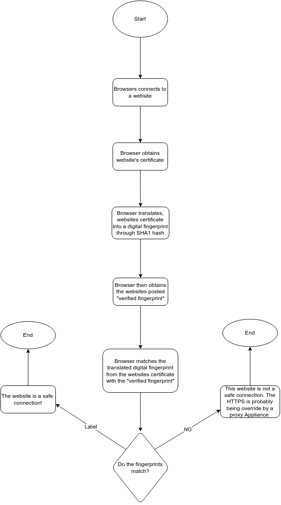

Mr. Ben-Yaakov
The 2 purposes of an HTTPS connection is to encrypt data transfered from the server to the browser, and ensure that hacker can decrypt the same data the server is sending to the browser. This protects the website and the use from being hacked (Gibson 2022). An HTTPS Proxy Appliance is a tool used by organizations that want some access to private Interent history of the User. This proxy appliance bypasses the whole setup of the encrypted server to browser network, to access data regrading private or public internet history. This works by circumventing the guaratee of intenet privacy and security. This happens when the Appliance adds a Psuedo Certificate of Authority to the user's browser, indicating that when the user uses the browser and access the internet server, the orginization, with the fake authority pass, can now access information about the user, his internet history, and much more. This is used by organizations like schools or the government, and they "are just tracking important information that they have the right to know" but in reality they can see everything(Gibson 2022).
An MITM is when a perpretrator positions himself between the user and the application the user is sending information too. This is used to steal private information from a user when he sends it to a website, such as credit card information. The user communicates this information to a website to buy something, only to have this information intercepted before it reaces the website, and private information fell into the wrong hands. This presents risks as users cannot trust websites that may have an MITM involved, and keep in mind, the user cannot see that, so it is risky to communicate such information online with the threat of an MITM (What is an MITM 2019)
The Contents of SSL are hashed to compare any slight difference. This hashing is the identification of the fingerprint. The algorithm used for hash is SHA1 instead of the older and weaker MD5. An output of a hash is near impossible as it does an amazing job of encrypting the data it digests. A "good" has changes to output even if it detects a small change in the initial input. That small imbalance is enough for the hash to detect somethings wrong and change the output. This allows users to detect the use of HTTPS Proxy Appliance (Gibson 2022). A Certificate Authroity (CA) is what signs sercurity certificates. It is how sites are able to have credibility that they are a verified safe website as they have the signature of the CA. Their role is basically like a credible signature, ensuring the websites safety when the signature occurs (Gibson 2022). An SSL prevention can be detected but not prevented. A proxy Appliance can still direct the user to the website, but the certifcate given by the site to the HTTPS connection is always fraudulent (Gibson 2022). A false Positive is when an output test called the certificate positive, when it really was negative, and a false negative is when output test calls the certifcate negative, when really it was positive (Gibson 2022).
The idea that organizations have the ability to access people's Internet is scary. People have a lot of private information in their lives, and it should be their decision to keep it private or show it to the world, and when privacy is requested, that should be respected. Although, organizations do need access to ceartin types of information for them to track you as a member, they cannot have access to all the private information of the user regardless of whether that information is important or not. People have a private life, and we as a community should respect that fact
Secure browser Website Test Flowchart

Citations
Steve Gibson, G. I. B. S. O. N. R. E. S. E. A. R. C. H. C. O. R. P. O. R. A. T. I. O. N. (n.d.). GRC : SSL TLS HTTPS web server certificate fingerprints . GRC | SSL TLS HTTPS Web Server Certificate Fingerprints . Retrieved August 26, 2022, from https://www.grc.com/fingerprints.htm#top
What is MITM (man in the middle) attack: Imperva. Learning Center. (2019, December 29). Retrieved August 26, 2022, from https://www.imperva.com/learn/application-security/man-in-the-middle-attack-mitm/